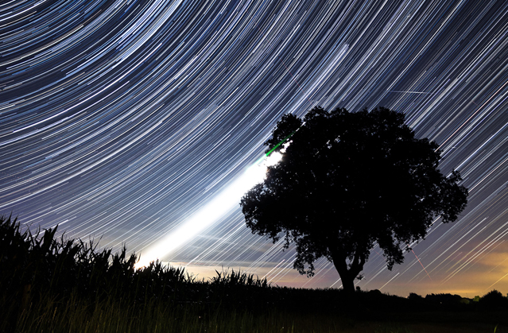
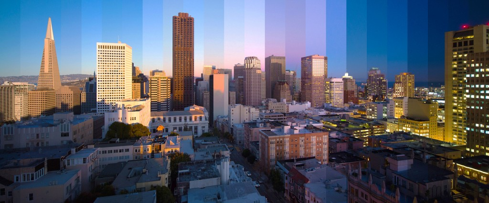
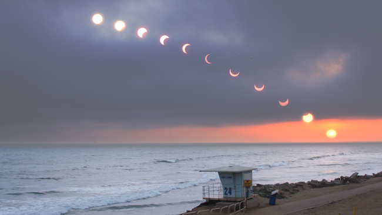
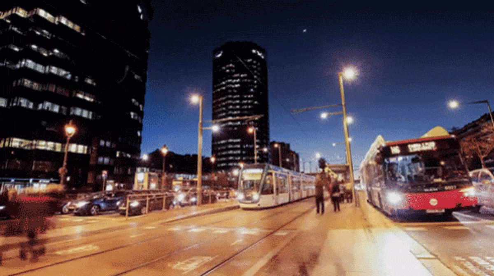
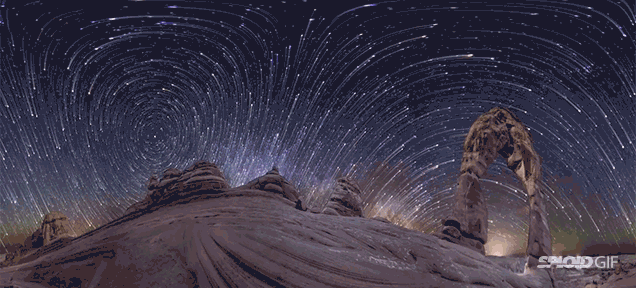
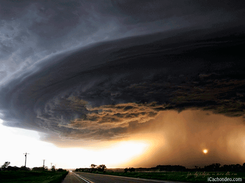

TRAVEL THROUGH SPACE AND TIME >>>>>>>>>>>>>
WHAT IS TIME?
- The indefinite continued progress of existence and events in the past, present, and future regarded as a whole.
- The measured or measurable period during which an action, process, or condition exists or continues
Clouds movement during sunset

Stars passing by over night
People passing time lapse
 Day to night

Eclipe over time
ANIMATED


